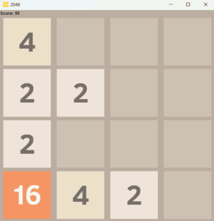
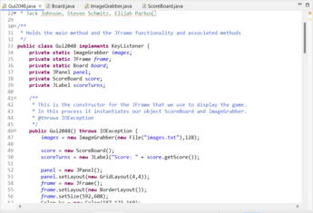
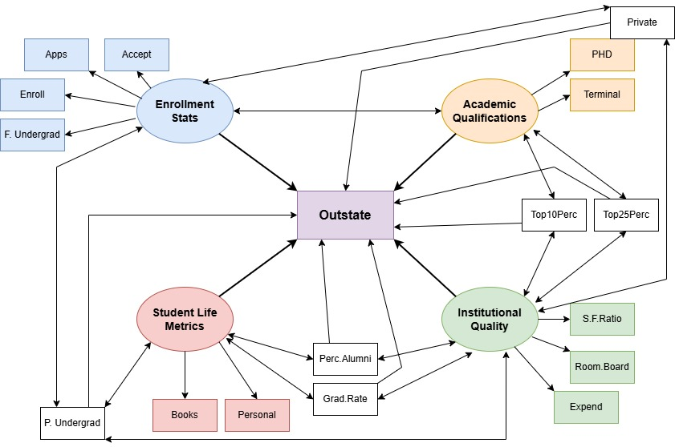
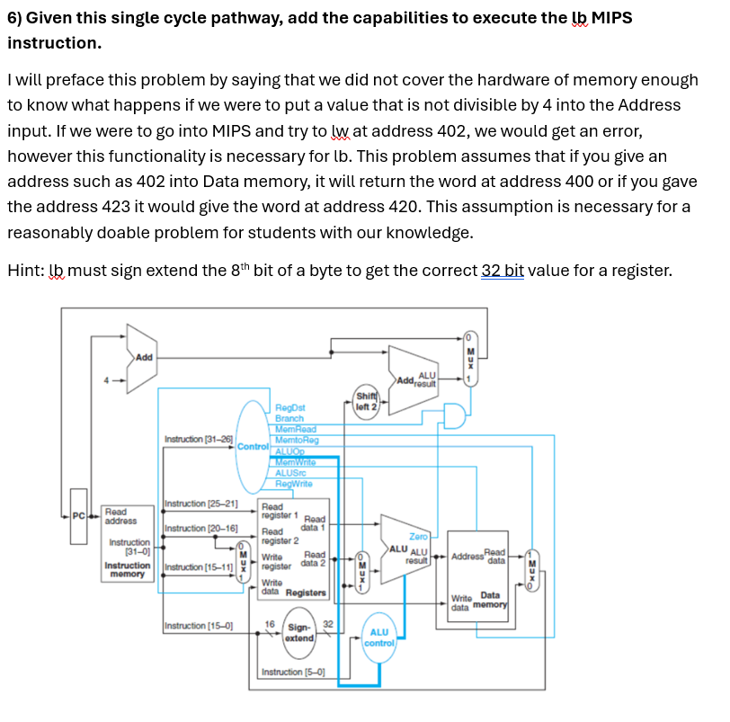
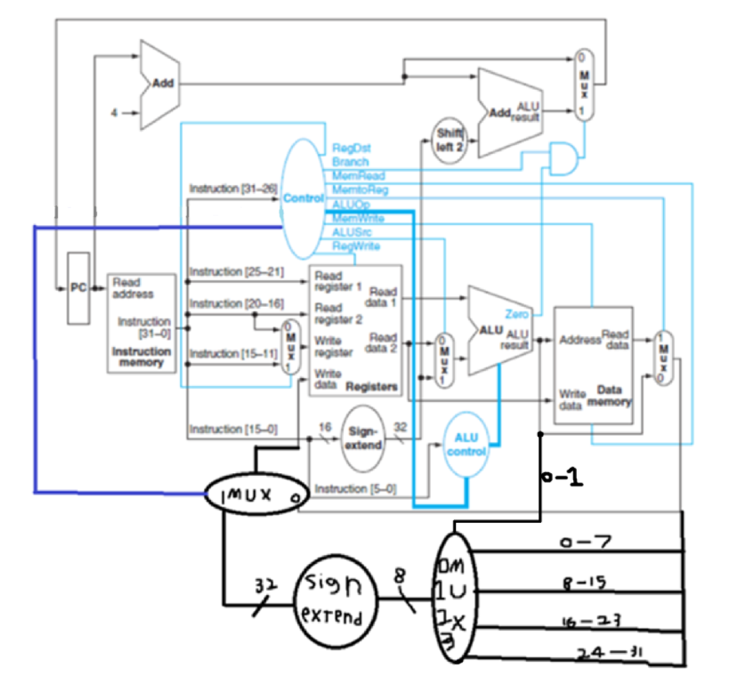

Here is just a small collection of projects I have completed in other classes that I thought were moderately neat enough to present on this webpage.
2048
For CISC230 we had a final project and after a bit of discussion about what would make for a good final project, out group decided to emulate the online game 2048. If you do not know what that is it is very simple, you have 2 that randomly appear in a 4x4 grid and you can choice to move all of them up, down, left or right. If two of them are next to each other in the same direction you move they merge and become a 4 merge two 4s for and 8 and so on. You do this until you run out of space. Really I think it was a neat project, it was a lot of work to get working but the final result was really good. The code we made could be uploaded to an actual website to play this is people felt like playing a slightly less smooth version of 2048, and also it was a good learning experience and that.


Data Science Diagram
This is actually a data science project I worked on. It was for DASC360 and we had to analyze a bunch of data. Specifically we had to find out how much each variable had on each other and make a diagram of supervariables, how they impacted each other and impacted the main factor we chose, and how each individual factor had on each of these. We did our data on schools and what and how factors impacted the out of state tuition of a college. Interestingly enough the data we used may have been generated arbitrarly just for the purpose of analyzing it, we were not able to confirm one way or another, but we could still do our project on it since it didn't matter if the data was real as long as we analyzed it correctly. In the end we made a diagram for how each variable relates to each other and I think it looks pretty professional.

Path Diagram
When I took DASC340 computer architecture, right before the final exam we were put into a few groups and had to make mini final exams for the purpose of studying, and then also we could see what other questions the other groups did. When thinking of questions to write for computer architecture, by far the hardest question to make was a modify the path diagram question. For this type of question you are given a path diagram of a cpu and you have to modify it to make a specific function possible. I was the only person in the class who made a modify the path diagram question, even the people in my group were suprised/impressed that I did that. I had people modifying the path in order to add the lb (load byte) function.

